Designing a new way to check the weather.
- Role
- Product Designer
Illustrator - Timeline
- October 2026
- Tools
- Procreate
Claude Code
Overview
Duckweather is a web app that makes checking the forecast fun. Instead of standard weather icons, a cast of hand-drawn ducks changes outfit to match the weather in any city.
- 21hand-drawn ducks
- 5°Fbetween each outfit
- 0–100°Fplus a rain duck
Each duck was designed and illustrated in Procreate, then brought to life as a working site with Claude Code. Duckweather trades plain numbers and icons for a character with personality, turning an everyday routine into something worth looking forward to.
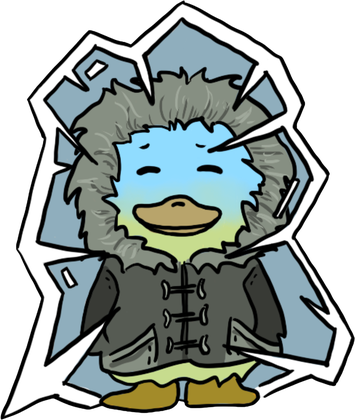
0°
0–5° range
Concept

The layout began as a quick sketch in Procreate. The duck and the temperature share the top of the page, so the outfit and the number are read together at a glance.
Supporting details sit below in simple cards: a six-day forecast, an hourly temperature chart, then air quality, wind and UV. Much of this structure carried straight through to the final design.
An early idea included the duck with speech bubbles and little encouragements. The final design drops these to focus on the duck and its outfits.
Every duck is drawn over the same base character. Starting from one shared shape keeps the proportions, face and personality consistent, so only the outfit changes from one temperature to the next.
Process
Each duck was drawn in Procreate across many layers, which fell into three stages. The first layers were the sketch and outline, working out the pose and outfit. Next came the base color layers, blocking in flat colors. The last layers were for shading and extra details, which really brought each duck to life.
Coldest · 0–5°
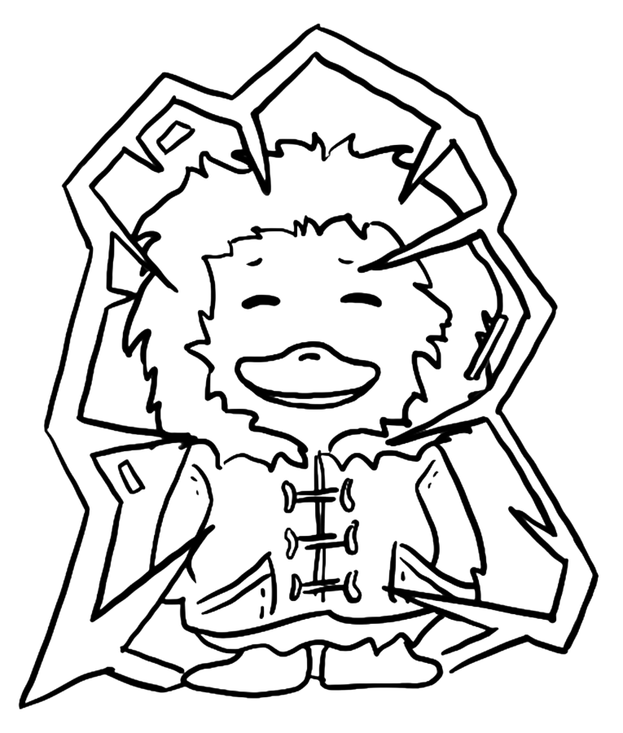
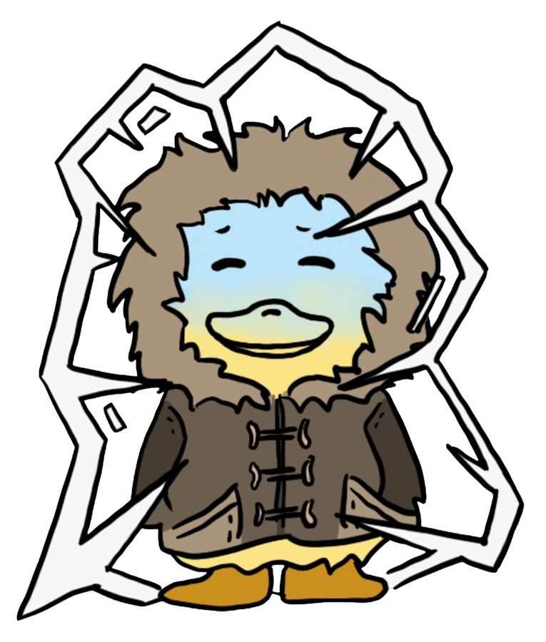
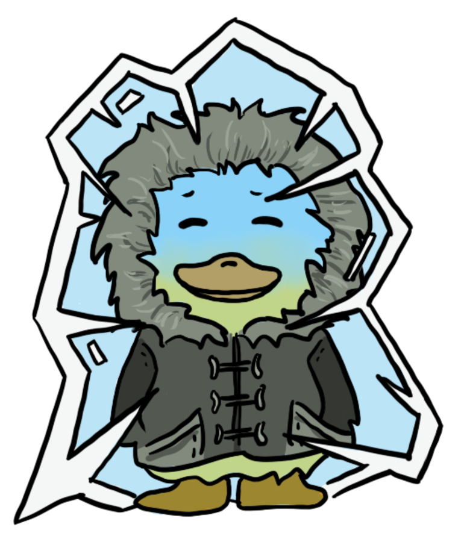
Mild · 60–65°
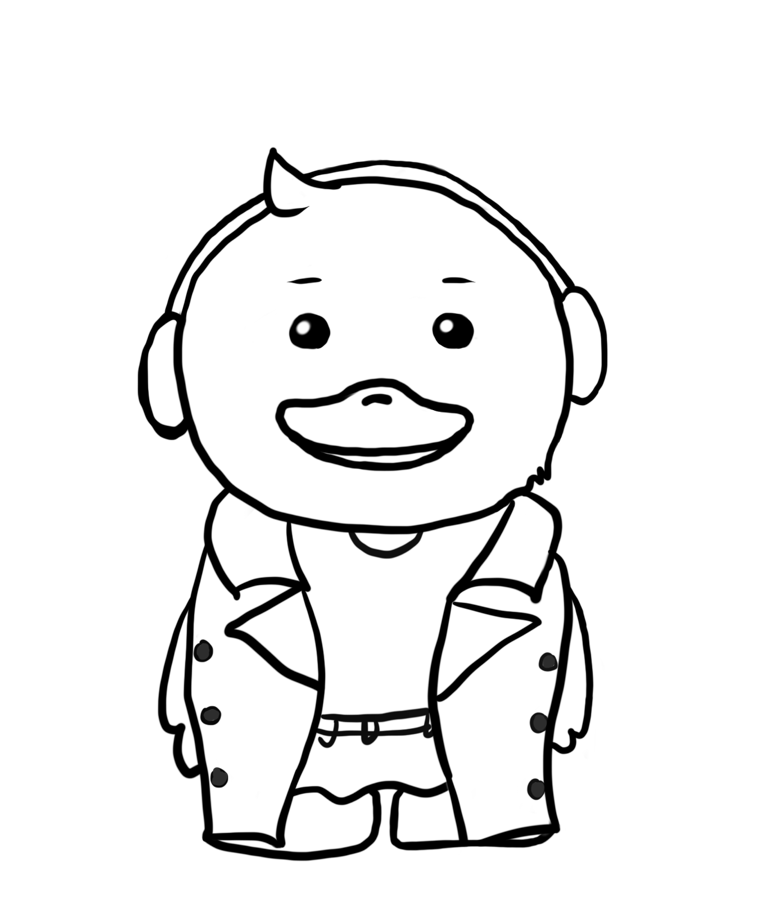
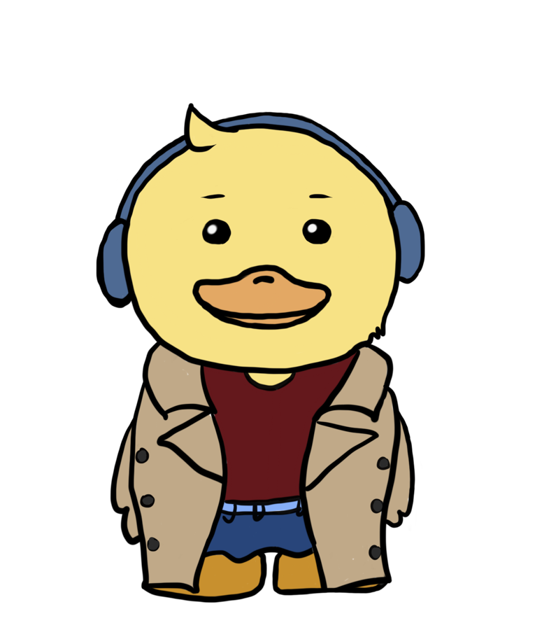
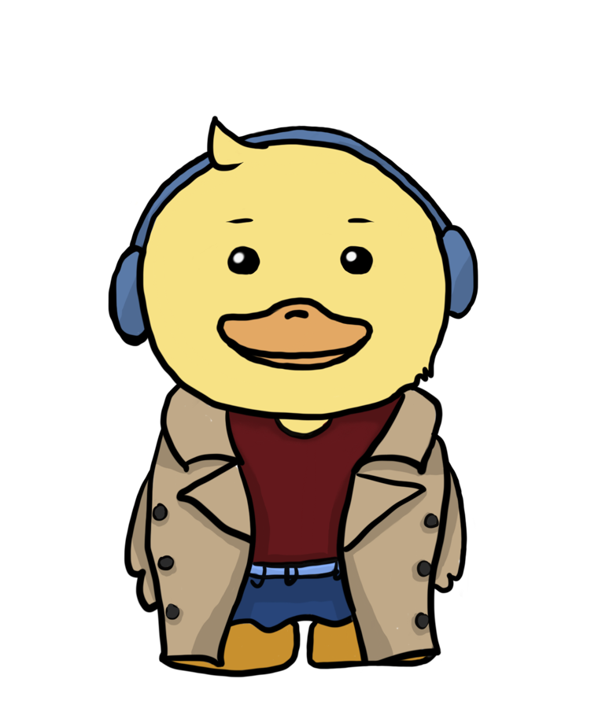
Hottest · 95–100°
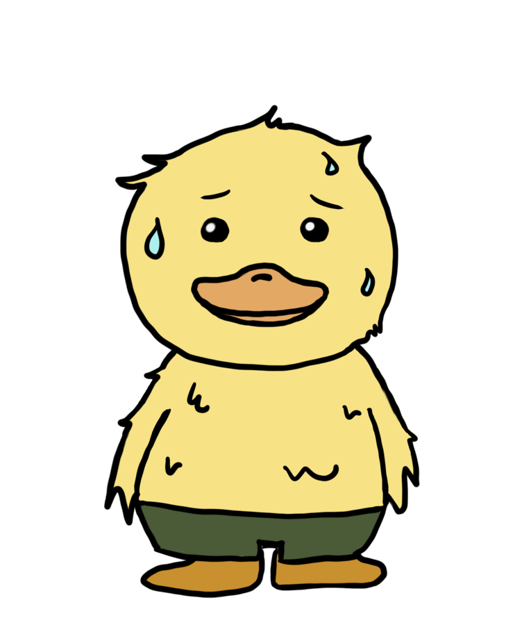
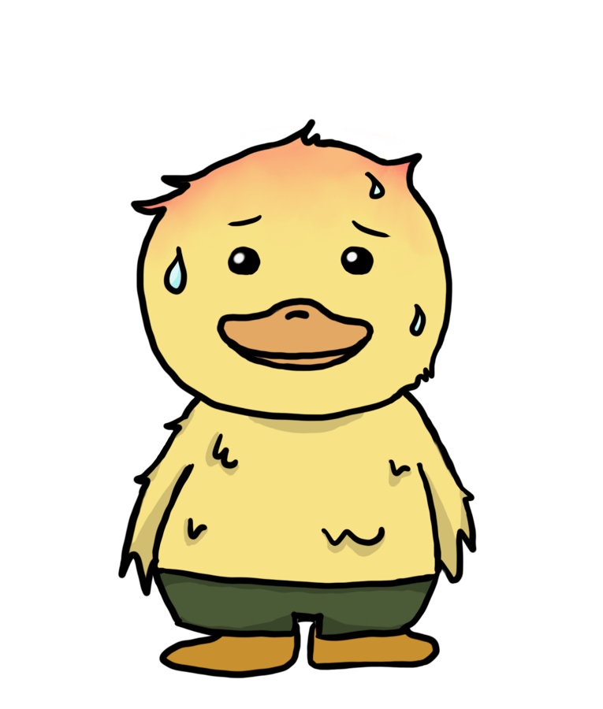
Meet the ducks
The duck gets a new outfit for every five degrees, from 0° to 100°, plus one for rain. Weather often barely moves from one day to the next, so smaller steps mean the duck changes more often and checking the forecast never gets repetitive. Five degrees is also roughly when you'd actually notice a difference and reach for another layer.
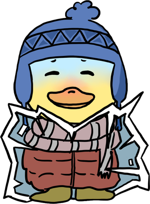
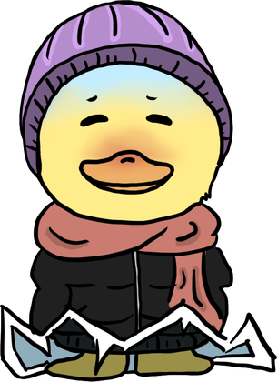
The coldest days · 0–15°
On the coldest days the duck bundles up in its heaviest layers: parkas, puffers, beanies and scarves. Its face fades from icy blue to yellow, and at 0–5° it's frozen solid in a block of ice. As it warms up, the ice cracks open and breaks away into shards at its feet, so you can watch the duck thaw out across the range.
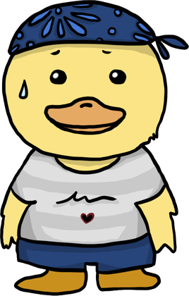
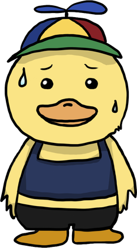
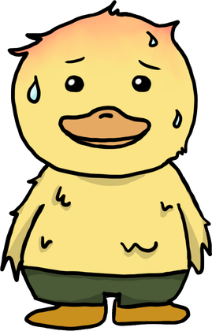
The hottest days · 85–100°
The hottest days work the other way around: the duck sheds layers. It goes from a bandana and tee to a tank top and propeller cap, and finally down to just shorts. Sweat drops, a flushed red head and droopy, ruffled feathers exaggerate and help show the heat.
The build
With the ducks drawn, I built Duckweather into a working site with Claude Code. Each duck was exported as its own transparent image and named by its temperature range, so the site could pick the right one automatically.
Live forecasts come from Open-Meteo, a free weather API. When you search for a city, the site grabs the current temperature, finds which five-degree range it falls into and shows that duck, or the rain duck when it's raining. The site also follows the sun in that city: once the sun sets it switches to a darker night look, and it brightens back up to day when the sun rises.
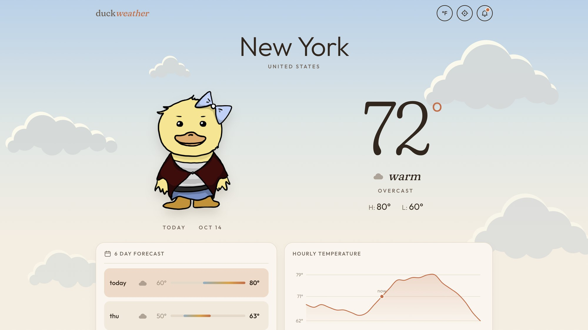
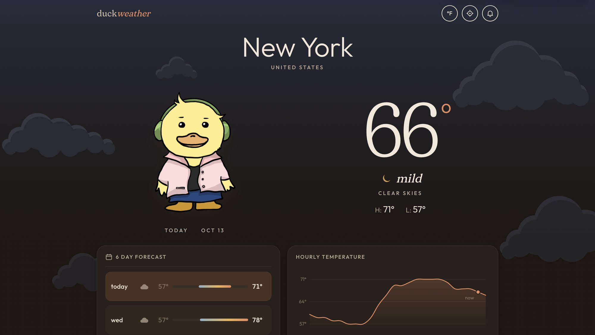
Reflection
Duckweather was my first time building a website, with little to no coding experience. While drawing 21 ducks, I learned how to express personality using small details, and working with Claude Code showed me I don't need to be an engineer to bring my designs to life.
With more time, I would've loved to dive deeper into this project with a home screen widget, an option for users to dress and customize their own duck, and new ducks for wind and snow. I'd also add more reactive features, like the duck moving when tapped on.
This project showed me that I can carry an idea all the way from sketch to a live site. Claude Code is now one more tool in my process, and I'm excited to see what I build next.
Try it
Live site
Meet the duck for today's weather.
Search any city and see which outfit the duck picks.
Open Duckweather